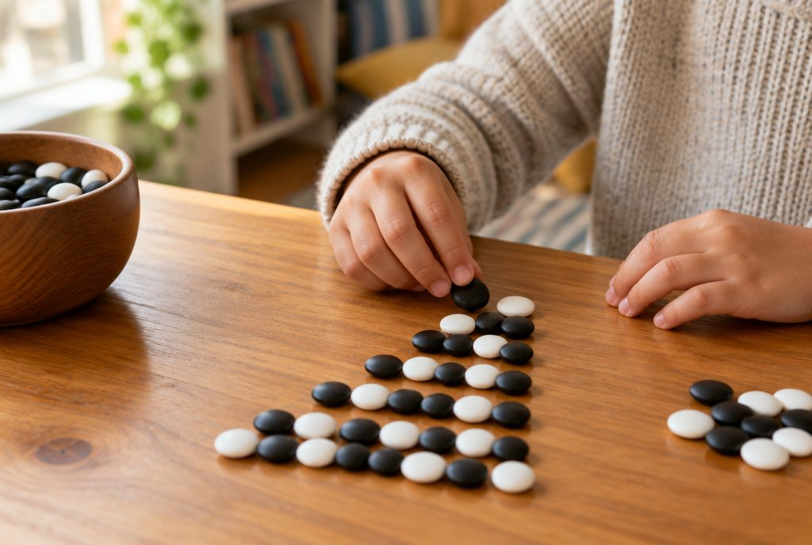

규칙을 찾아 수와 식으로 나타내 볼까?

계단을 한 칸 오를 때마다 높이가 똑같이 높아지듯, 우리 주변에는 일정하게 변하는 것이 많아요. 규칙을 찾으면 다음에 올 수도 미리 알 수 있어요.
함께 변하는 두 양에서 규칙을 찾아요
세발자전거가 1대 늘어날 때마다 바퀴는 3개씩 늘어나요. 이처럼 한 양이 변하면 다른 양도 따라 변하는 경우가 많아요.
두 양을 표로 정리하면 어떻게 변하는지 쉽게 보여요. 표를 보고 '세발자전거 수에 3을 곱하면 바퀴 수가 돼요.'처럼 규칙을 말로 설명해요.
세발자전거 1대 → 바퀴 3개, 2대 → 6개, 3대 → 9개, 4대 → 12개 → 세발자전거가 6대면 바퀴는 6 × 3 = 18(개)예요.
수의 배열에서 규칙을 찾아요
수가 놓인 표에서 오른쪽, 아래쪽, 비스듬한 방향으로 수가 어떻게 변하는지 살펴봐요.
수가 일정하게 커지거나 작아지면 얼마씩 변하는지 찾아요. 어떤 배열은 같은 수를 곱해 가며 커지기도 해요.
찾은 규칙을 이용하면 빈칸에 들어갈 수를 알 수 있어요.
1025, 1125, 1225, 1325, □ → 100씩 커지므로 □ = 1425 / 3, 6, 12, 24, □ → 2씩 곱하므로 □ = 48
모양의 배열을 수와 식으로 나타내요
바둑돌을 놓는 모양이 규칙적으로 바뀌면 바둑돌의 수도 규칙적으로 변해요.
순서마다 바둑돌 수를 식으로 써 보면 규칙이 더 잘 보여요. 첫째 1, 둘째 1 + 2, 셋째 1 + 2 + 2처럼 쓰면 2개씩 늘어난다는 것을 알 수 있어요.
첫째 1개, 둘째 3개, 셋째 5개, 넷째 7개 → 2개씩 늘어나므로 다섯째는 7 + 2 = 9(개)예요.
이렇게 풀어요: 계산식 배열의 규칙
계산식이 차례로 놓여 있으면 식의 수가 어떻게 바뀌고, 계산 결과가 어떻게 바뀌는지 함께 살펴봐요.
① 곱하는 수가 얼마씩 커지는지 봐요. ② 계산 결과가 얼마씩 변하는지 봐요. ③ 찾은 규칙으로 다음 식과 결과를 추측하고, 직접 계산해서 맞는지 확인해요.
37 × 3 = 111, 37 × 6 = 222, 37 × 9 = 333 → 곱하는 수가 3씩 커지면 결과는 111씩 커져요. 다음 식은 37 × 12 = 444예요.
등호(=)는 양쪽이 같다는 뜻이에요
등호(=)는 '답을 쓰세요.'라는 표시가 아니라, 왼쪽과 오른쪽의 크기가 같다는 표시예요. 그래서 7 + 8 = 10 + 5처럼 양쪽에 모두 식이 올 수도 있어요.
등호가 있는 식이 옳은지 알아볼 때는 양쪽을 각각 계산해 비교해요. 수가 어떻게 바뀌었는지 살피면 계산하지 않고도 알 수 있어요.
한쪽에서 한 수가 4만큼 커지면, 크기가 같아지도록 다른 수는 4만큼 작아져야 해요.
16 + 27 = 20 + □ → 16이 20으로 4만큼 커졌으니 27은 4만큼 작아져야 해요. □ = 23 (확인: 16 + 27 = 43, 20 + 23 = 43)
핵심 낱말
- 규칙
- 수나 모양이 일정하게 바뀌는 약속
- 배열
- 수나 모양을 차례대로 늘어놓은 것
- 계산식
- 덧셈, 뺄셈, 곱셈, 나눗셈 기호를 써서 계산을 나타낸 식
- 등호(=)
- 왼쪽과 오른쪽의 크기가 같다는 것을 나타내는 기호
한 줄 정리
- 함께 변하는 두 양은 표로 정리하면 규칙이 잘 보여요.
- 수나 모양, 계산식의 배열에서 규칙을 찾으면 다음을 추측할 수 있어요.
- 등호(=)는 양쪽의 크기가 같다는 뜻이에요.
학교 교육과정 연결
- [4수02-01] 다양한 변화 규칙을 찾아 설명하고, 그 규칙을 수나 식으로 나타낼 수 있다.
- [4수02-02] 계산식의 배열에서 규칙을 찾고, 계산 결과를 추측할 수 있다.
- [4수02-03] 등호를 사용하여 크기가 같은 두 양의 관계를 식으로 나타낼 수 있다.